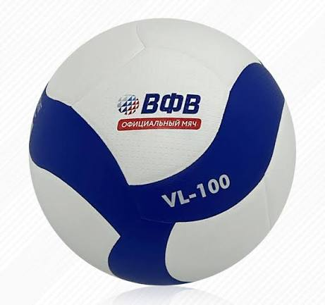
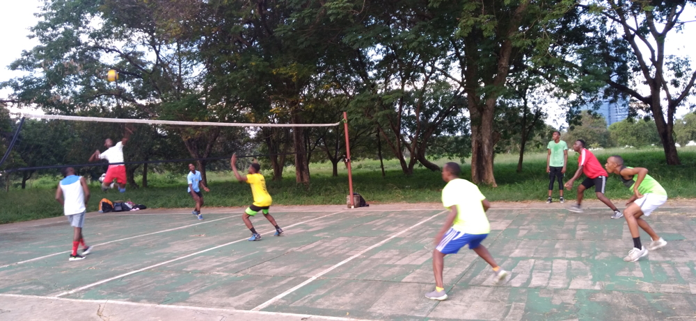

Подготовка к игре
Инвентарь для волейбола
Для первой тренировки достаточно мяча, удобной спортивной формы и площадки с сеткой. Ниже - простая памятка, что проверить перед игрой.
Что взять на тренировку
| Предмет | Для чего нужен | Полезная ссылка |
|---|---|---|
 Волейбольный мяч |
Мяч подходящего размера и веса для зала или пляжа. | Размеры мяча в правилах FIVB |
| Спортивная форма | Лёгкая одежда, не ограничивающая движение. | Упражнения для разминки |
| Обувь для зала | Устойчивая обувь с нескользящей подошвой. | Форма заявки |
Классический мяч Mikasa

Выбирайте мяч, предназначенный именно для вашего типа площадки. Для первых занятий лучше взять мяч у тренера, чтобы проверить его размер и давление.
Перед использованием подготовьте мяч:
- Осмотрите поверхность и швы.
- Проверьте давление и упругость.
- Уберите мяч в сухое место после игры.
- Подберите экипировку по типу площадки:
- для зала - обувь с нескользящей подошвой;
- для пляжа - лёгкая форма и защита от солнца.
Волейбол в игре
